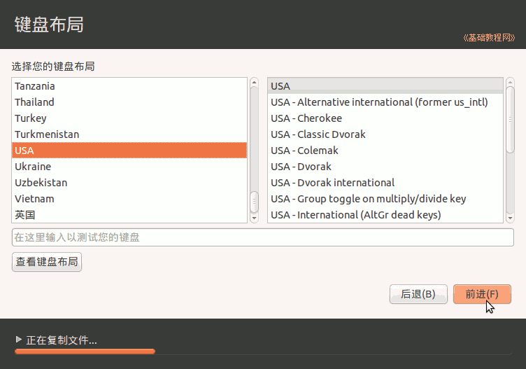
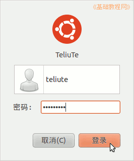
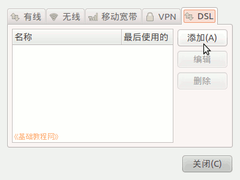

Ubuntu安装基础教程
作者：TeliuTe 来源：基础教程网
二十、安装Ubuntu10.10 返回目录 下一课10.10 版安装与前面版本类似，学习中遇到不清楚的地方，可以参考一下前面的内容，操作中注意细心，下面来看一个练习；
1、进入 live cd 桌面
1）设置好启动后，断开网络，然后重启动计算机，可以用硬盘启动，也可以刻成光盘启动，镜像的下载地址：
进入后找蓝色链接点击下载，如 ubuntu-10.10-desktop-i386.iso：http://mirrors.sohu.com/ubuntu-releases/10.10/
硬盘安装请参阅：http://teliute.org/linux/Ubsetup/jichu0/jichu0.html
2）启动后稍等，系统自动运行，在下边出来两个图标时，可以按ESC键呼出菜单项；
3）等一会就进入一个桌面，这就是试用的 live cd 桌面，桌面左上边有有两个图标，右上角是“关机”按钮；
4）对于硬盘安装，点左上角菜单：“ 应用程序－附件－终端” 进入终端窗口；
5）输入命令 sudo umount -l /isodevice 然后按一下回车键，没什么提示就是成功了；
2、安装系统
1）双击桌面“安装Ubuntu10.10”图标，稍等出来一个“欢迎”面板，左侧应该选中了“中文(简体)”，
如果不是就在左边选中它，然后点右下角“前进”按钮继续；
2）第2步是检查准备情况，要求磁盘空间足够，是否安装一些受限软件，一般不用勾选，网络也不要连接，直接点“前进”按钮继续；
3）接下来第3步是询问安装到哪个分区，选择第三个“手动指定分区(高级)”，点“前进”按钮继续；
4）接下来出来磁盘分区情况，如果要新建分区和转换分区可以参考前面的第7、13、15、16、19课，这儿是安装到之前的8.10分区上；
5）点击选中要安装的分区，可以根据分区类型和大小来确定，然后点下边的“更改”按钮；
6）在出来的对话框中，设定用于分区的格式Ext4，打勾“格式化”，在“挂载点”右边点一下，选 “/”，点“确定”
注意，格式化会删除这个分区上的所有文件，请提前备份重要数据；
7）回到分区面板，检查一下分区编辑好了，点“现在安装”，如果还有 /home 分区，按原来的设，一般不打勾“格式化”，只需提前清理里面的配置文件；
8）检查以后，点“现在安装”开始复制文件，如果提示没有交换空间，点“继续”，这个是用于休眠的，大小跟内存相同的分区，一般不用它；
9）点“继续”后出来询问地区的，点“前进”即可，同时下边已经开始安装了；
10）接下来是键盘布局，一般是“USA”，直接点“前进”继续；

11）接下来是设定自己的用户名和密码等，从上到下依次输入即可，然后点“前进”；
12）然后接着继续安装过程，可以看一下系统的介绍；
13）耐心等待完成，然后出来一个对话框，点“现在重启”完成安装，按组合键 Ctr + Alt + Delete 也可以呼出关机对话框；
14）稍等提示取出光盘，然后按回车键，重新启动计算机，安装完成；
3、连网换源
１）重新启动后，停在一个登录界面，点击自己的用户名，输入密码后按回车，或点“登录”按钮，进入系统；

2）进入桌面后会出来一个“不完整语言支持”的提示对话框，先不关闭拖到一边后面要用；

3）先连网，找到屏幕右上角键盘旁边的一个网络图标，瞄准点右键，选“编辑连接”；
4）对于ADSL拨号宽带连接上网，在出来的对话框右边，点 DSL 标签，然后点添加；

5）在出来的对话框里，先打勾上边的 “自动连接”，然后在用户名里输入ADSL宽带用户名，
下面的密码里，输入宽带密码，然后点右下角的“应用”按钮，在出来的密码框中输入密码；
关闭对话框以后，稍等一下会提示连网成功，
也可以重新启动计算机，命令行使用 sudo pppoeconf 命令也可以；
(下面6-7是局域网的，宽带用户不要设置)
6）如果是局域网上网，在出来的对话框里，选中里面的“Auto eth0”，点右边的“编辑”按钮；
7）在出来的对话框里，选择 IPV4 设置标签，在下面的方法里选“手动”，再点下边的“添加”按钮，
在出来的文本框里，依次输入 IP 地址、子网掩码、网关，然后按回车键确定，在下面的 DNS 里输入 DNS 服务器地址，
检查一下，点右下角的“应用”按钮，在出来的认证中，输入自己的密码；
回到原来对话框点“关闭”，稍等一会就可以上网了，也可以重新启动计算机；
8）连接好网络后先换源，在左上角“应用程序菜单”上点右键，在出来的菜单中选“编辑菜单”；
9）在出来的面板左侧选中“系统管理”，在右侧面板中打勾“软件源”，然后点“关闭”；
10）点菜单“系统 - 系统管理 - 软件源”，输入密码后进入窗口；
11）在出来的窗口中，点“下载自”旁边的下拉列表，选“其他站点”；
12）在出来的面板中，选择一个搜狐、163 或 cn99 的站点都可以；
13）点下面的“选择服务器”，关闭窗口后，出来更新提示，点“重新载入”，等待完成就好了；
更多设置源的相关介绍，请参阅：http://teliute.org/linux/Ubsetup/lesson9/lesson9.html
4、更新系统
1）回到最开头的“不完整语言言支持”对话框，点“现在执行此动作”；

2）在出来的“语言支持没有完全安装”对话框中，点“安装”，安装语言包；
3）然后开始下载语言包，耐心等待下载完成，然后接着安装这些包；
4）待语言包安装完成后，点关闭按钮关闭各个对话框；
如果“不完整语言言支持”对话框没了，就点上边的菜单“系统－系统管理－语言支持”；
在出来的面板中，点下边的“添加或删除语言”按钮，打勾选中“中文(简体)－应用变更”，等待安装完成；
5）过一会还会出来更新管理器对话框，点安装更新按钮；
6）然后在出来的密码框中，输入自己的密码，点确定；
7）接下来就是下载和安装，这儿耐心等待即可；
8）安装完成后，关闭对话框，点右上角的关机按钮，再点“重启动”重启动电脑；
9）重新启动后，各个程序也都是中文的了；
其他细节：如果发现 Windows 的启动菜单项没了，先不着急，更新完就有了，如果还没有则在终端执行 sudo update-grub，或者把原来备份的 grub.cfg 找出来，照着填加进去；
本节学习了安装 ubuntu 10.10 的基本方法，如果你成功地完成了练习，请继续学习下一课内容；
本教程由86团学校TeliuTe制作|著作权所有
基础教程网：http://teliute.org/
美丽的校园……
转载和引用本站内容，请保留版权信息和本站链接。